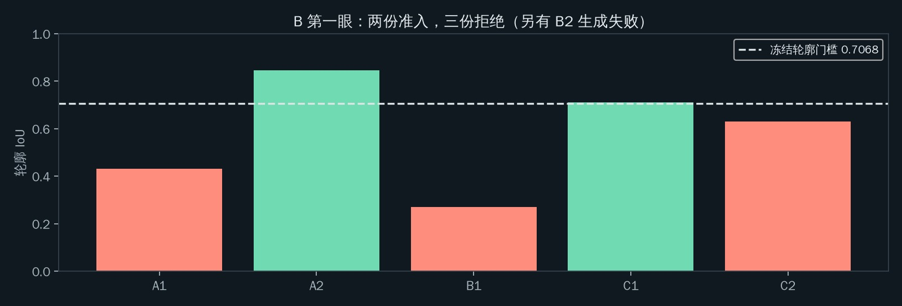
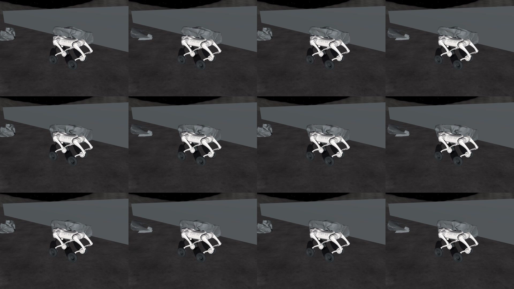
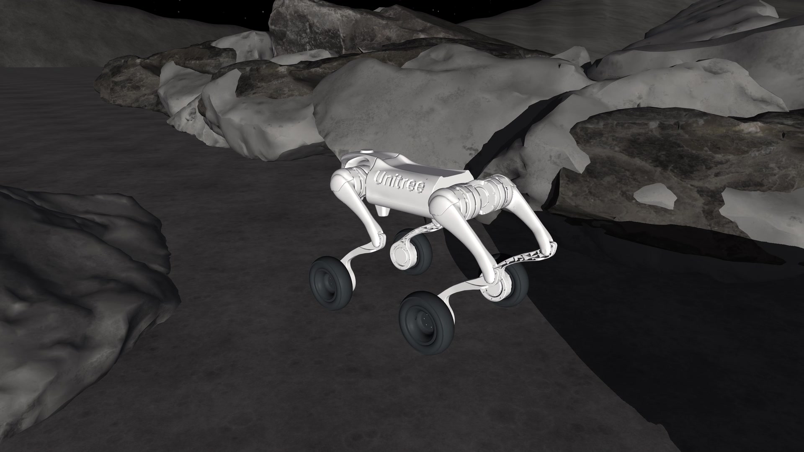

01 / 核对看见的一面模型得和照片对得上。
对照机器人观察到的部分，保留符合观测的候选，记录被拒的原因。
让生成的三维形状，参与机器人行动
机器人拍下一张石头照片，Lux3D 生成整块石头的 3D。把看不见的另一面放进推演，再决定怎么走。
二者来自同一个真实 Lux3D 任务 5958685，按原字节保留。这里直接加载返回的原 GLB，由官方 @manycore/aholo-viewer 1.14.0 显示。下载原模型 · 照片、模型与来源记录 · 继续逛模型陈列室
 Lux3D 模型判断 × 轮腿机器人行动
Lux3D 模型判断 × 轮腿机器人行动一个任务 / 从完整形状到实际通行
Lux3D 提供看不见的背面，BeforeStep 把这些模型变成可验证的行动依据。
从生成模型，回到真实行动
Lux3D 提供完整形状的可能。BeforeStep 用实际观测筛选这些形状，再在模型构成的世界里试走。

01 / 核对看见的一面对照机器人观察到的部分，保留符合观测的候选，记录被拒的原因。

02 / 在可能的世界里试走R1 的六份 A 模型与两份 B 模型组成十二个世界，让机器人在每个组合里预演。

03 / 选择下一步行动根据各个模型中的预演，选择行动，并保留原场景中的实际执行结果。
完整作品 Demo / 185 秒中文成片
从原始照片和生成模型，到同路对照、轮腿动作与实际结果。点击章节，可以直接看感兴趣的部分。
视频暂时未加载，可以通过“下载完整视频”打开。
继续探索作品
模型、原运行、正式报告和代码，在这里接着看。